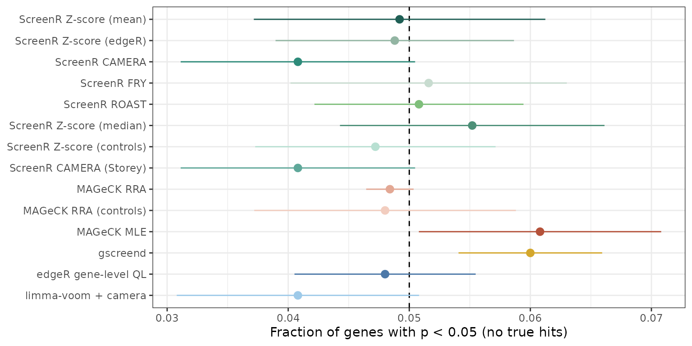
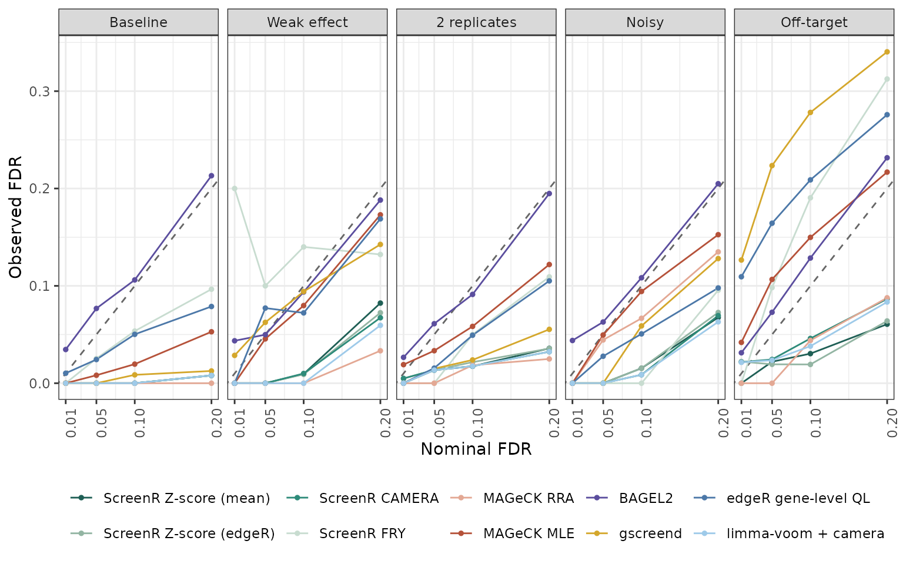
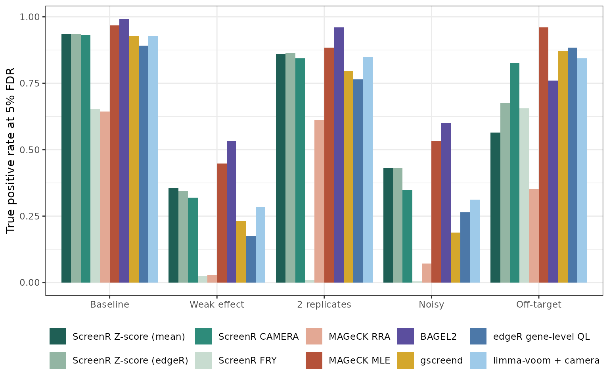
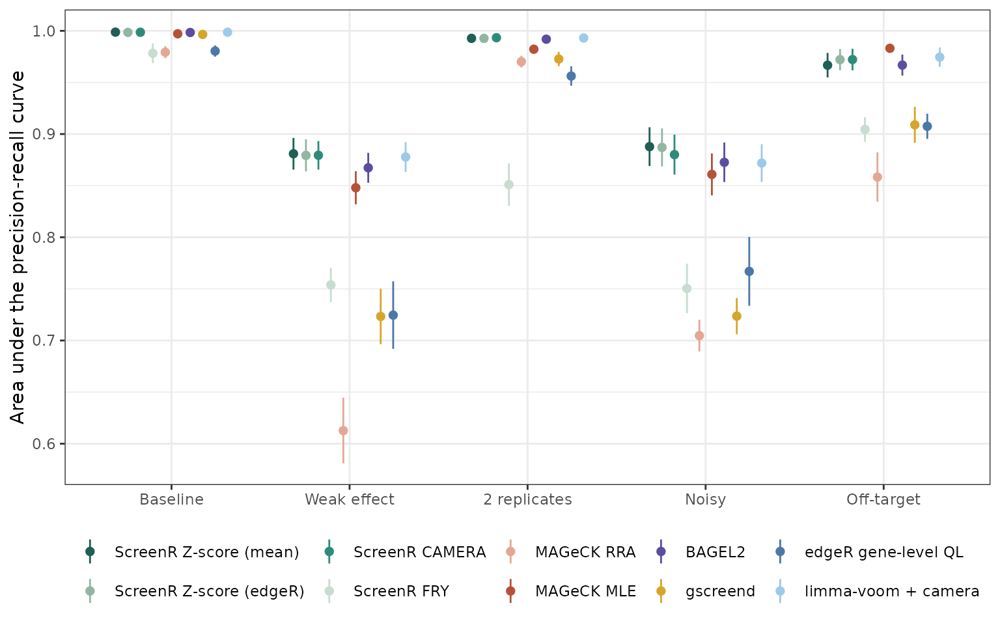
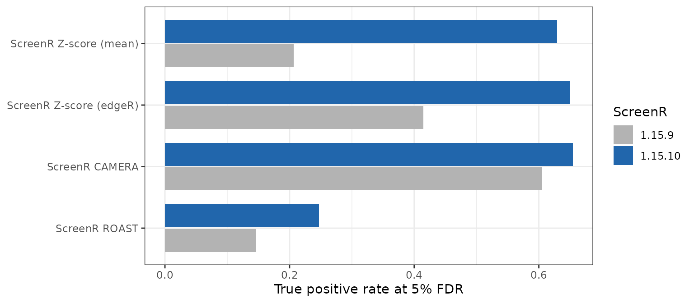
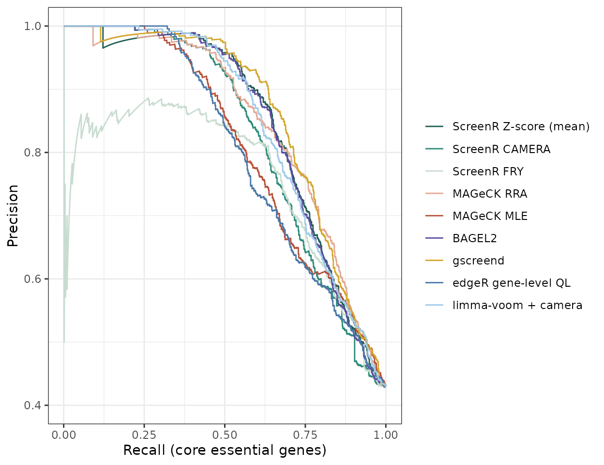
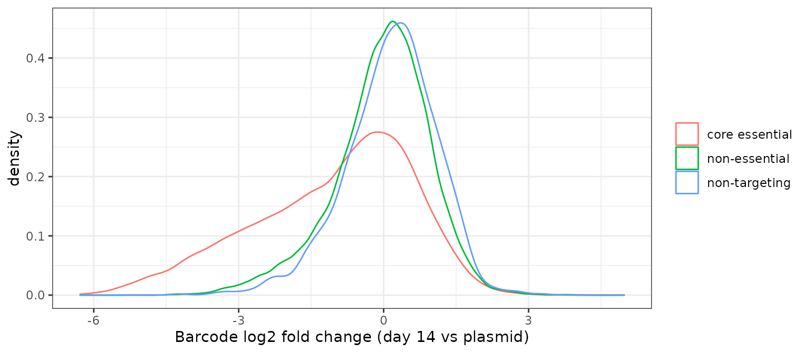
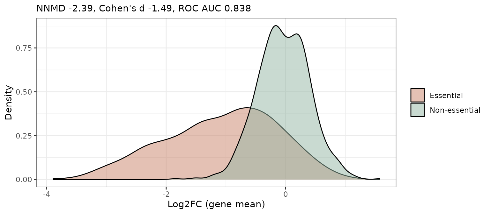
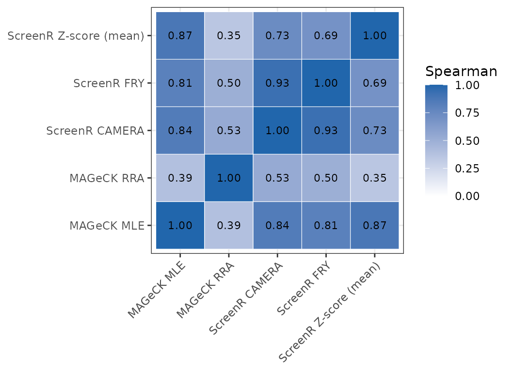

Benchmark against MAGeCK and other tools
Emanuel Michele Soda
Istituto Europeo Oncologia (IEO), Milano, Italyemanuelsoda@gmail.com
Elena Ceccacci
Istituto Europeo Oncologia (IEO), Milano, Italyelena.ceccacci@ieo.it
2026-10-15
Source:vignettes/Benchmark_MAGeCK.Rmd
Benchmark_MAGeCK.RmdAbout this vignette
This vignette compares the hit-finding methods of ScreenR with other tools for pooled screens:
- MAGeCK RRA and MAGeCK MLE (Li et al. 2014, 2015), the most used tools;
- BAGEL2 (Kim and Hart 2021), a supervised classifier of essential genes;
- gscreend (Imkeller et al. 2020), a Bioconductor package for CRISPR screens;
- two plain edgeR/limma workflows: edgeR quasi-likelihood test on the counts summed by gene, and limma-voom with camera on the barcodes of each gene (as proposed for shRNA and CRISPR screens by Dai et al. 2014).
The comparisons use
- simulated screens, where the true hits are known exactly;
- a published K562 shRNA essentiality screen
(
k562_count_table), where the core essential genes are the true hits and the non-essential genes the true negatives; - a published HAP1 CRISPR-Cas9 essentiality screen, evaluated in the same way;
- the ScreenR example dataset (
count_table), which has no ground truth.
The other tools are Python programs or packages that are not
dependencies of ScreenR, so their results (MAGeCK 0.5.9.5, BAGEL2,
gscreend 1.17.2, edgeR 4.0, limma 3.58) and the simulation results are
precomputed and distributed in inst/extdata/benchmark. The
ScreenR methods on the K562 screen are run here, so this vignette also
shows how to compare ScreenR with other tools on your own data. The
scripts that produced the precomputed results are in the
benchmark folder of the GitHub repository.
Some differences in how the tools were run matter for the interpretation:
- BAGEL2 is supervised: it needs genes known to be essential and non-essential to train its classifier. In the simulations it was trained on half of the true hits and half of the genes without effect, and on the real screens on the reference genes used for the evaluation (with 10-fold cross-validation, its standard use). It reports Bayes factors, not p-values, so it has no null calibration and its calls use its own FDR estimate.
-
MAGeCK MLE p-values were computed from its Wald
statistic (
pnorm(z), Benjamini-Hochberg), not from its permutation FDR. - gscreend accepts a single reference sample, so the control replicates were summed. It is deprecated in Bioconductor 3.19.
library(ScreenR)
library(dplyr)
library(tidyr)
library(ggplot2)
benchmark_dir <- system.file("extdata", "benchmark", package = "ScreenR")
labels <- c(
ScreenR_Zscore_mean = "ScreenR Z-score (mean)",
ScreenR_Zscore_edgeR = "ScreenR Z-score (edgeR)",
ScreenR_CAMERA = "ScreenR CAMERA",
ScreenR_FRY = "ScreenR FRY",
ScreenR_ROAST = "ScreenR ROAST",
ScreenR_Zscore_median = "ScreenR Z-score (median)",
ScreenR_Zscore_controls = "ScreenR Z-score (controls)",
ScreenR_CAMERA_storey = "ScreenR CAMERA (Storey)",
ScreenR_legacy_rule = "ScreenR legacy rule",
MAGeCK_RRA = "MAGeCK RRA",
MAGeCK_RRA_controls = "MAGeCK RRA (controls)",
MAGeCK_MLE = "MAGeCK MLE",
BAGEL2 = "BAGEL2",
gscreend = "gscreend",
edgeR_gene_QL = "edgeR gene-level QL",
limma_voom_camera = "limma-voom + camera"
)
colours <- c(
"ScreenR Z-score (mean)" = "#1F5F55", "ScreenR Z-score (edgeR)" = "#93B5A3",
"ScreenR CAMERA" = "#2E8B7A", "ScreenR FRY" = "#C8DCD0",
"ScreenR ROAST" = "#7FBF7B", "ScreenR Z-score (median)" = "#4D9078",
"ScreenR Z-score (controls)" = "#B8E0D2",
"ScreenR CAMERA (Storey)" = "#5FA89A", "ScreenR legacy rule" = "grey50",
"MAGeCK RRA" = "#E3A894", "MAGeCK RRA (controls)" = "#F2CDBF",
"MAGeCK MLE" = "#B5523A", "BAGEL2" = "#5B4E9E", "gscreend" = "#D4A72C",
"edgeR gene-level QL" = "#4C78A8", "limma-voom + camera" = "#9ECAE9"
)
# The methods shown in the figures (all methods are in the tables)
main <- c("ScreenR_Zscore_mean", "ScreenR_Zscore_edgeR", "ScreenR_CAMERA",
"ScreenR_FRY", "MAGeCK_RRA", "MAGeCK_MLE", "BAGEL2", "gscreend",
"edgeR_gene_QL", "limma_voom_camera")
scenarios <- c(
S0_null = "No hits", S1_baseline = "Baseline",
S2_weak_effect = "Weak effect", S3_two_replicates = "2 replicates",
S4_noisy = "Noisy", S5_off_target = "Off-target"
)Simulated screens
Design
Each simulated screen has 500 genes with 10 shRNAs each and 500 non-targeting shRNAs, with 3 control and 3 treated samples. The counts are negative binomial, and the abundance of the shRNAs in the library is log-normal. 10% of the genes are true hits, depleted in the treated samples: each of their shRNAs has its own knockdown efficiency and 20% of them do not work at all. Six scenarios were simulated, each with 5 random seeds:
| Scenario | Change from the baseline |
|---|---|
| No hits | no true hits: every call is false |
| Baseline | 3 vs 3 replicates, log2 fold change -1, dispersion 0.05 |
| Weak effect | log2 fold change -0.5 |
| 2 replicates | 2 vs 2 replicates |
| Noisy | dispersion 0.2 (four times more biological variability) |
| Off-target | 3% of the shRNAs depleted whatever gene they target |
The ScreenR methods are find_camera_hit() (with
Benjamini-Hochberg or Storey FDR), find_roast_hit() (ROAST
and FRY), find_gene_zscore_hit() (mean, median, with the
non-targeting shRNAs as reference and on the statistics of
compute_barcode_statistics()) and the legacy rule of
find_zscore_hit(). The other tools are MAGeCK RRA (also
with the non-targeting shRNAs as controls,
--control-sgrna), MAGeCK MLE, BAGEL2, gscreend, the edgeR
gene-level test and limma-voom with camera.
simulation <- bind_rows(
read.csv(file.path(benchmark_dir, "simulation.csv")),
read.csv(file.path(benchmark_dir, "simulation_competitors.csv"))
) %>%
mutate(
Method = factor(labels[method], levels = labels),
Scenario = factor(scenarios[scenario], levels = scenarios)
)
head(simulation)
#> method alpha n_called FDP TPR null_p_below AUPRC time scenario
#> 1 MAGeCK_RRA 0.01 0 0 NA 0.012 NA 0.708 S0_null
#> 2 MAGeCK_RRA 0.05 1 1 NA 0.048 NA 0.708 S0_null
#> 3 MAGeCK_RRA 0.10 1 1 NA 0.092 NA 0.708 S0_null
#> 4 MAGeCK_RRA 0.20 1 1 NA 0.198 NA 0.708 S0_null
#> 5 MAGeCK_RRA_controls 0.01 0 0 NA 0.006 NA 0.724 S0_null
#> 6 MAGeCK_RRA_controls 0.05 0 0 NA 0.046 NA 0.724 S0_null
#> seed Method Scenario
#> 1 1 MAGeCK RRA No hits
#> 2 1 MAGeCK RRA No hits
#> 3 1 MAGeCK RRA No hits
#> 4 1 MAGeCK RRA No hits
#> 5 1 MAGeCK RRA (controls) No hits
#> 6 1 MAGeCK RRA (controls) No hitsFor each method, screen and nominal FDR level (alpha)
the table has the number of genes called (n_called), the
false discovery proportion (FDP, the fraction of called
genes that are not true hits), the true positive rate
(TPR), the fraction of genes without effect with p-value
below alpha (null_p_below), the area under the
precision-recall curve of the p-value ranking (AUPRC) and
the run time in seconds.
Are the p-values valid?
In the screens without hits, a valid test has about 5% of the genes with p < 0.05.
simulation %>%
filter(scenario == "S0_null", alpha == 0.05, !is.na(null_p_below),
method != "ScreenR_legacy_rule") %>%
group_by(Method) %>%
summarise(fraction = mean(null_p_below), se = sd(null_p_below) / sqrt(n())) %>%
ggplot(aes(fraction, Method, colour = Method)) +
geom_vline(xintercept = 0.05, linetype = "dashed") +
geom_pointrange(aes(xmin = fraction - 2 * se, xmax = fraction + 2 * se)) +
scale_colour_manual(values = colours, guide = "none") +
scale_y_discrete(limits = rev) +
labs(x = "Fraction of genes with p < 0.05 (no true hits)", y = NULL) +
theme_bw()
All the methods are close to 5% (BAGEL2 has no p-values). The legacy rule, which has no p-value, called on average 87 genes in these screens, all of them false.
Is the FDR controlled?
A method controls the FDR when the observed FDR (the mean false discovery proportion) is at or below the nominal level, the dashed line.
simulation %>%
filter(scenario != "S0_null", method %in% main) %>%
group_by(Method, Scenario, alpha) %>%
summarise(FDR = mean(FDP), .groups = "drop") %>%
ggplot(aes(alpha, FDR, colour = Method)) +
geom_abline(linetype = "dashed", colour = "grey40") +
geom_line() +
geom_point(size = 1) +
facet_wrap(~Scenario, nrow = 1) +
scale_colour_manual(values = colours) +
scale_x_continuous(breaks = c(0.01, 0.05, 0.1, 0.2)) +
labs(x = "Nominal FDR", y = "Observed FDR", colour = NULL) +
theme_bw() +
theme(legend.position = "bottom", axis.text.x = element_text(angle = 90))
fdr_table <- simulation %>%
filter(scenario != "S0_null", alpha == 0.05) %>%
group_by(Method, Scenario) %>%
summarise(FDP = mean(FDP), .groups = "drop") %>%
pivot_wider(names_from = Scenario, values_from = FDP)
knitr::kable(fdr_table, digits = 3,
caption = "Observed FDR at a nominal FDR of 5% (mean over 5 seeds).")| Method | Baseline | Weak effect | 2 replicates | Noisy | Off-target |
|---|---|---|---|---|---|
| ScreenR Z-score (mean) | 0.000 | 0.000 | 0.013 | 0.000 | 0.022 |
| ScreenR Z-score (edgeR) | 0.000 | 0.000 | 0.013 | 0.000 | 0.019 |
| ScreenR CAMERA | 0.000 | 0.000 | 0.014 | 0.000 | 0.024 |
| ScreenR FRY | 0.025 | 0.100 | 0.000 | 0.000 | 0.098 |
| ScreenR ROAST | 0.026 | 0.000 | 0.000 | 0.000 | 0.064 |
| ScreenR Z-score (median) | 0.013 | 0.000 | 0.023 | 0.031 | 0.022 |
| ScreenR Z-score (controls) | 0.046 | 0.039 | 0.075 | 0.056 | 0.053 |
| ScreenR CAMERA (Storey) | 0.000 | 0.000 | 0.014 | 0.000 | 0.024 |
| ScreenR legacy rule | 0.501 | 0.604 | 0.516 | 0.575 | 0.530 |
| MAGeCK RRA | 0.000 | 0.000 | 0.000 | 0.044 | 0.000 |
| MAGeCK RRA (controls) | 0.190 | 0.071 | 0.096 | 0.156 | 0.073 |
| MAGeCK MLE | 0.008 | 0.046 | 0.033 | 0.050 | 0.107 |
| BAGEL2 | 0.077 | 0.050 | 0.061 | 0.063 | 0.073 |
| gscreend | 0.000 | 0.062 | 0.015 | 0.000 | 0.224 |
| edgeR gene-level QL | 0.024 | 0.077 | 0.015 | 0.028 | 0.164 |
| limma-voom + camera | 0.000 | 0.000 | 0.013 | 0.000 | 0.024 |
The ScreenR CAMERA and Z-score tests, limma-voom with camera and MAGeCK RRA stay below the nominal FDR in every scenario. BAGEL2 is slightly above it in most scenarios; MAGeCK MLE, gscreend and the edgeR gene-level test exceed it with off-target effects (gscreend up to about 20%); MAGeCK RRA with the non-targeting controls exceeds it in every scenario, and the legacy rule has about 50% false hits.
How many hits are found?
simulation %>%
filter(scenario != "S0_null", alpha == 0.05, method %in% main) %>%
group_by(Method, Scenario) %>%
summarise(TPR = mean(TPR), .groups = "drop") %>%
ggplot(aes(Scenario, TPR, fill = Method)) +
geom_col(position = position_dodge(0.9)) +
scale_fill_manual(values = colours) +
labs(x = NULL, y = "True positive rate at 5% FDR", fill = NULL) +
theme_bw() +
theme(legend.position = "bottom")
The true positive rate depends on the FDR threshold, so it should be read together with the previous section: the legacy rule finds almost all the hits because it calls many false ones. The area under the precision-recall curve measures how well the true hits are ranked first, whatever the threshold:
simulation %>%
filter(scenario != "S0_null", alpha == 0.05, !is.na(AUPRC),
method %in% main) %>%
group_by(Method, Scenario) %>%
summarise(se = sd(AUPRC) / sqrt(n()), AUPRC = mean(AUPRC),
.groups = "drop") %>%
ggplot(aes(Scenario, AUPRC, colour = Method)) +
geom_pointrange(aes(ymin = AUPRC - se, ymax = AUPRC + se),
position = position_dodge(0.7), size = 0.3) +
scale_colour_manual(values = colours) +
labs(x = NULL, y = "Area under the precision-recall curve",
colour = NULL) +
theme_bw() +
theme(legend.position = "bottom")
simulation %>%
filter(scenario != "S0_null", alpha == 0.05) %>%
group_by(Method) %>%
summarise(`Observed FDR` = mean(FDP), TPR = mean(TPR),
AUPRC = mean(AUPRC), `Time (s)` = median(time)) %>%
knitr::kable(digits = 3,
caption = "Mean over the five scenarios with hits, at 5% FDR.")| Method | Observed FDR | TPR | AUPRC | Time (s) |
|---|---|---|---|---|
| ScreenR Z-score (mean) | 0.007 | 0.630 | 0.945 | 1.701 |
| ScreenR Z-score (edgeR) | 0.007 | 0.650 | 0.946 | 1.660 |
| ScreenR CAMERA | 0.008 | 0.654 | 0.945 | 1.676 |
| ScreenR FRY | 0.045 | 0.269 | 0.848 | 1.560 |
| ScreenR ROAST | 0.018 | 0.247 | 0.852 | 3.431 |
| ScreenR Z-score (median) | 0.018 | 0.628 | 0.921 | 6.852 |
| ScreenR Z-score (controls) | 0.054 | 0.807 | 0.946 | 0.339 |
| ScreenR CAMERA (Storey) | 0.008 | 0.654 | 0.945 | 1.500 |
| ScreenR legacy rule | 0.545 | 0.912 | NA | NA |
| MAGeCK RRA | 0.009 | 0.342 | 0.825 | 1.693 |
| MAGeCK RRA (controls) | 0.117 | 0.570 | 0.828 | 1.515 |
| MAGeCK MLE | 0.049 | 0.758 | 0.934 | 370.529 |
| BAGEL2 | 0.065 | 0.769 | 0.939 | 39.744 |
| gscreend | 0.060 | 0.603 | 0.865 | 9.032 |
| edgeR gene-level QL | 0.062 | 0.596 | 0.867 | 0.125 |
| limma-voom + camera | 0.007 | 0.643 | 0.943 | 1.222 |
In these simulations the ScreenR CAMERA and Z-score tests rank the hits as well as the best tools (limma-voom with camera, BAGEL2 and MAGeCK MLE) and better than MAGeCK RRA, gscreend and the edgeR gene-level test, which lose most with weak effects or noisy data. At the same nominal FDR they are more conservative: BAGEL2 and MAGeCK MLE find more hits, but BAGEL2 is trained on known hits and both exceed the nominal FDR in some scenarios. ROAST and FRY test each gene on its own barcodes, so they have little power with two replicates or noisy data. limma-voom with camera behaves almost exactly like the ScreenR CAMERA test: they are the same kind of test, which ScreenR wraps in a complete workflow.
The simulations use a simple model (independent barcodes, the same number of barcodes for every gene, depletion only), so they show how the methods behave rather than how they rank on every real screen.
Before and after the calibration of ScreenR 1.15.10
The first version of this benchmark showed that the ScreenR tests were valid but too conservative (two-sided p-values used for a one-sided question and a binomial gene test with few possible p-values). ScreenR 1.15.10 fixed both.
before <- read.csv(file.path(benchmark_dir, "simulation_before_1.15.10.csv"))
compared <- c("ScreenR_CAMERA", "ScreenR_ROAST", "ScreenR_Zscore_mean",
"ScreenR_Zscore_edgeR")
bind_rows(
before %>%
mutate(method = recode(method, ScreenR_Zscore = "ScreenR_Zscore_mean"),
version = "1.15.9"),
simulation %>% mutate(version = "1.15.10")
) %>%
filter(method %in% compared, scenario != "S0_null", alpha == 0.05) %>%
mutate(Method = factor(labels[method], levels = labels),
version = factor(version, c("1.15.9", "1.15.10"))) %>%
group_by(Method, version) %>%
summarise(TPR = mean(TPR), .groups = "drop") %>%
ggplot(aes(TPR, Method, fill = version)) +
geom_col(position = position_dodge(0.8), width = 0.75) +
scale_fill_manual(values = c("grey70", "#2166AC")) +
scale_y_discrete(limits = rev) +
labs(x = "True positive rate at 5% FDR", y = NULL, fill = "ScreenR") +
theme_bw()
K562 essentiality screen
The data
k562_count_table is a subset of the genome-wide shRNA
screen of Morgens et al. (2016): the plasmid library and two replicates
after 14 days of growth of K562 cells. The shRNAs of the genes needed
for growth are depleted. The reference genes of Hart et
al. (k562_reference_genes) give the truth: the 681 core
essential genes should be called, the 904 non-essential genes should
not.
data(k562_count_table)
data(k562_annotation_table)
data(k562_reference_genes)
samples <- data.frame(
Sample = c("Plasmid", "T14_A", "T14_B"),
Day = "Screen",
Treatment = c("Plasmid", "T14", "T14")
)
k562 <- create_screenr_object(
table = k562_count_table, annotation = k562_annotation_table,
groups = factor(c("Plasmid", "T14", "T14")), sample_table = samples
)
k562 <- compute_data_table(normalize_data(k562))
k562
#> class: screenr_object
#> dim: 67358 3
#> metadata(0):
#> assays(2): counts normalized
#> rownames(67358): 0_H01__01204 0_H01__01217 ... 9978_H02__24
#> 9978_H02_~_25
#> rowData names(4): Barcode Gene Gene_ID Class
#> colnames(3): Plasmid T14_A T14_B
#> colData names(4): Sample Day Treatment Group
#> data table: 202074 rows, 7 columnsRunning the ScreenR methods
The comparison is day 14 against the plasmid. fdr = 1
returns every gene, so that the methods can be evaluated at any
threshold.
design <- create_design_matrix(k562)
contrast <- create_contrast(design, treatment = "T14", control = "Plasmid")
metrics <- compute_metrics(k562,
control = "Plasmid", treatment = "T14", day = "Screen"
)
results <- list(
`ScreenR_CAMERA` = find_camera_hit(k562, design, contrast,
fdr = 1, number_barcode = 1),
`ScreenR_FRY` = find_roast_hit(k562, design, contrast,
method = "fry", fdr = 1, number_barcode = 1),
`ScreenR_Zscore_mean` = find_gene_zscore_hit(metrics,
fdr = 1, min_barcodes = 1, n_permutations = 20000, seed = 1),
`ScreenR_Zscore_controls` = find_gene_zscore_hit(metrics,
control_genes = "non-targeting", fdr = 1, min_barcodes = 1,
n_permutations = 20000, seed = 1)
)
results <- lapply(results, function(x) select(x, Gene, PValue, FDR))Adding the results of the other tools
The other tools were run on the same counts: mageck test
for RRA, mageck mle with a design with intercept and
treatment, BAGEL2 trained on the reference genes, gscreend and the two
edgeR/limma workflows.
others <- bind_rows(
read.csv(file.path(benchmark_dir, "mageck_k562.csv")),
read.csv(file.path(benchmark_dir, "competitors_k562.csv"))
)
results <- c(split(select(others, -method), others$method), results)
names(results)
#> [1] "BAGEL2" "edgeR_gene_QL"
#> [3] "gscreend" "limma_voom_camera"
#> [5] "MAGeCK_MLE" "MAGeCK_RRA"
#> [7] "ScreenR_CAMERA" "ScreenR_FRY"
#> [9] "ScreenR_Zscore_mean" "ScreenR_Zscore_controls"Evaluation on the reference genes
evaluate <- function(result, alpha = 0.05) {
# Genes are sorted by name, so that tied p-values are ordered the same
# way for every method
merged <- left_join(k562_reference_genes, result, by = "Gene") %>%
mutate(PValue = coalesce(PValue, 1), FDR = coalesce(FDR, 1)) %>%
arrange(Gene)
essential <- merged$Class == "core essential"
called <- merged$FDR <= alpha
hit <- essential[order(merged$PValue)]
precision <- cumsum(hit) / seq_along(hit)
tibble(
`Essential called` = sum(called & essential),
`Non-essential called` = sum(called & !essential),
Recall = mean(called[essential]),
`Non-essential fraction` = sum(called & !essential) / max(1, sum(called)),
AUPRC = sum(precision[hit]) / sum(hit)
)
}
k562_evaluation <- bind_rows(lapply(results, evaluate), .id = "method") %>%
mutate(Method = labels[method]) %>%
select(Method, everything(), -method) %>%
arrange(desc(AUPRC))
knitr::kable(k562_evaluation, digits = 3,
caption = "K562: reference genes called at 5% FDR.")| Method | Essential called | Non-essential called | Recall | Non-essential fraction | AUPRC |
|---|---|---|---|---|---|
| gscreend | 331 | 7 | 0.486 | 0.021 | 0.861 |
| MAGeCK RRA | 326 | 18 | 0.479 | 0.052 | 0.847 |
| ScreenR Z-score (mean) | 332 | 13 | 0.488 | 0.038 | 0.847 |
| BAGEL2 | 350 | 18 | 0.514 | 0.049 | 0.847 |
| limma-voom + camera | 316 | 10 | 0.464 | 0.031 | 0.844 |
| ScreenR CAMERA | 312 | 17 | 0.458 | 0.052 | 0.824 |
| MAGeCK MLE | 417 | 130 | 0.612 | 0.238 | 0.809 |
| edgeR gene-level QL | 405 | 142 | 0.595 | 0.260 | 0.801 |
| ScreenR Z-score (controls) | 547 | 292 | 0.803 | 0.348 | 0.767 |
| ScreenR FRY | 0 | 0 | 0.000 | 0.000 | 0.757 |
precision_recall <- bind_rows(lapply(results, function(result) {
merged <- left_join(k562_reference_genes, result, by = "Gene") %>%
mutate(PValue = coalesce(PValue, 1)) %>%
arrange(Gene)
hit <- merged$Class[order(merged$PValue)] == "core essential"
tibble(recall = cumsum(hit) / sum(hit),
precision = cumsum(hit) / seq_along(hit))
}), .id = "method") %>%
filter(method %in% main) %>%
mutate(Method = factor(labels[method], levels = labels))
ggplot(precision_recall, aes(recall, precision, colour = Method)) +
geom_line() +
scale_colour_manual(values = colours) +
coord_cartesian(ylim = c(0.4, 1)) +
labs(x = "Recall (core essential genes)", y = "Precision", colour = NULL) +
theme_bw()
The tools that control the FDR call between 310 and 350 of the 681 essential genes with few non-essential genes, and their rankings are close (AUPRC 0.82 to 0.86, gscreend best): on this screen the ScreenR Z-score test is comparable to MAGeCK RRA and BAGEL2. MAGeCK MLE and the edgeR gene-level test find more essential genes but also many non-essential ones (MAGeCK MLE skipped the genes with more than about 40 shRNAs, which count as not called here).
Two ScreenR results show the limits of some methods:
- FRY calls no gene. It tests each gene on its own barcodes and relies on the variability between replicates, but the control group is a single plasmid sample. With one control sample use CAMERA or the Z-score test.
-
The non-targeting reference calls hundreds of non-essential
genes. In shRNA screens the targeting shRNAs are usually
somewhat depleted compared with the non-targeting ones, so every gene
looks depleted against them. Before using
control_genes, check that the controls behave like genes without effect:
metrics %>%
left_join(distinct(k562_annotation_table, Gene, Class), by = "Gene") %>%
filter(Class %in% c("non-targeting", "non-essential", "core essential")) %>%
ggplot(aes(Log2FC, colour = Class)) +
geom_density() +
labs(x = "Barcode log2 fold change (day 14 vs plasmid)", colour = NULL) +
theme_bw()
The non-targeting shRNAs (the reference) are shifted to the right of the non-essential genes, so they are not a good model of a gene without effect.
Checking the quality of the screen
The same reference genes measure the quality of a dropout screen
before looking at any hit. compute_screen_quality() reports
how well the essential genes are separated from the non-essential ones,
and plot_reference_separation() shows it;
hart_reference_genes has the full lists of Hart et al.,
usable with any human screen.
data(hart_reference_genes)
essential <- hart_reference_genes$Gene[
hart_reference_genes$Class == "core essential"]
nonessential <- hart_reference_genes$Gene[
hart_reference_genes$Class == "non-essential"]
compute_screen_quality(metrics, essential, nonessential)
#> # A tibble: 1 × 7
#> NEssential NNonessential MeanEssential MeanNonessential NNMD CohenD AUC
#> <int> <int> <dbl> <dbl> <dbl> <dbl> <dbl>
#> 1 660 890 -1.07 -0.0380 -2.39 -1.49 0.838
plot_reference_separation(metrics, essential, nonessential)
scale_by_reference() rescales the fold changes so that
the non-essential genes are at 0 and the essential genes at -1, which
makes screens of different strength comparable.
CRISPR-Cas9 screen
ScreenR also works with CRISPR-Cas9 screens: sgRNAs play the role of
the shRNAs. As a test we used the HAP1 screen with the TKOv3 library
(Hart et al. 2017; the example data of BAGEL2): about 71,000 sgRNAs, 4
for each of 18,000 genes, a T0 sample and three replicates after 18
days. The analysis compares day 18 with T0 and is evaluated on the core
essential and non-essential genes of hart_reference_genes.
The results of every method, restricted to the reference genes, are
precomputed.
hap1 <- read.csv(file.path(benchmark_dir, "crispr_hap1.csv"))
hap1_results <- split(select(hap1, -method), hap1$method)
evaluate_crispr <- function(result, alpha = 0.05) {
merged <- left_join(hart_reference_genes, result, by = "Gene") %>%
filter(!is.na(PValue)) %>%
arrange(Gene)
essential <- merged$Class == "core essential"
called <- merged$FDR <= alpha
hit <- essential[order(merged$PValue)]
precision <- cumsum(hit) / seq_along(hit)
tibble(
`Essential called` = sum(called & essential),
`Non-essential called` = sum(called & !essential),
Recall = mean(called[essential]),
AUPRC = sum(precision[hit]) / sum(hit)
)
}
bind_rows(lapply(hap1_results, evaluate_crispr), .id = "method") %>%
mutate(Method = labels[method]) %>%
select(Method, everything(), -method) %>%
arrange(desc(AUPRC)) %>%
knitr::kable(digits = 3,
caption = "HAP1 CRISPR screen: reference genes called at 5% FDR.")| Method | Essential called | Non-essential called | Recall | AUPRC |
|---|---|---|---|---|
| BAGEL2 | 638 | 33 | 0.988 | 0.998 |
| ScreenR Z-score (mean) | 396 | 0 | 0.613 | 0.998 |
| ScreenR CAMERA | 513 | 0 | 0.803 | 0.998 |
| ScreenR Z-score (edgeR) | 459 | 0 | 0.711 | 0.997 |
| limma-voom + camera | 487 | 0 | 0.754 | 0.997 |
| gscreend | 591 | 3 | 0.915 | 0.996 |
| edgeR gene-level QL | 539 | 1 | 0.834 | 0.995 |
| MAGeCK RRA | 362 | 0 | 0.560 | 0.994 |
| ScreenR FRY | 2 | 0 | 0.003 | 0.983 |
This screen has strong effects and every method ranks the essential genes almost perfectly. The ScreenR tests make no false calls but, with only 4 sgRNAs per gene, are more conservative at 5% FDR than gscreend and BAGEL2 (which is trained on the reference genes). As with the K562 plasmid, FRY finds nothing with a single T0 sample.
Three functions help with CRISPR screens:
-
barcodes_per_gene()counts the sgRNAs of each gene. The hit-finding functions warn when their threshold on the number of barcodes (number_barcode,min_barcodes) excludes many genes, which happens with the shRNA-oriented defaults and 4 sgRNAs per gene, and suggest a value. -
compute_screen_quality()andscale_by_reference(), shown above. -
correct_crispr_bias()corrects the copy-number and proximity bias of CRISPR-Cas9 screens (sgRNAs cutting amplified regions deplete the cells whatever their target) by calling the CRISPRcleanR package (Iorio et al. 2018), which must be installed separately because it is not on CRAN or Bioconductor (BiocManager::install("francescojm/CRISPRcleanR")).
ScreenR example dataset
The example dataset has no ground truth, so we only measure the agreement between the methods on the day 4 comparison of treated and control samples.
data(count_table)
data(annotation_table)
counts <- count_table
colnames(counts) <- c(
"Barcode", "Time1", "Time2", "Time3_TRT_A", "Time3_TRT_B", "Time3_TRT_C",
"Time3_CTRL_A", "Time3_CTRL_B", "Time3_CTRL_C",
"Time4_TRT_A", "Time4_TRT_B", "Time4_TRT_C",
"Time4_CTRL_A", "Time4_CTRL_B", "Time4_CTRL_C"
)
counts <- filter(counts, Barcode != "*")
groups <- factor(c(
"T1/T2", "T1/T2",
rep("Time3_TRT", 3), rep("Time3_CTRL", 3),
rep("Time4_TRT", 3), rep("Time4_CTRL", 3)
))
object <- create_screenr_object(
table = counts, annotation = annotation_table, groups = groups
)
object <- compute_data_table(normalize_data(remove_all_zero_row(object)))
design <- create_design_matrix(object)
contrast <- create_contrast(design, "Time4_TRT", "Time4_CTRL")
metrics <- compute_metrics(object,
control = "CTRL", treatment = "TRT", day = "Time4"
)
example <- list(
ScreenR_CAMERA = find_camera_hit(object, design, contrast,
fdr = 1, number_barcode = 1),
ScreenR_FRY = find_roast_hit(object, design, contrast,
method = "fry", fdr = 1, number_barcode = 1),
ScreenR_Zscore_mean = find_gene_zscore_hit(metrics,
fdr = 1, min_barcodes = 1, n_permutations = 20000, seed = 1)
)
example <- lapply(example, function(x) select(x, Gene, PValue, FDR))
mageck <- read.csv(file.path(benchmark_dir, "mageck_screenr_dataset.csv"))
example <- c(split(select(mageck, -method), mageck$method), example)
genes <- Reduce(intersect, lapply(example, function(x) as.character(x$Gene)))
ranks <- sapply(example, function(x) {
rank(x$PValue[match(genes, as.character(x$Gene))])
})
colnames(ranks) <- labels[colnames(ranks)]
as.data.frame(as.table(cor(ranks, method = "spearman"))) %>%
ggplot(aes(Var1, Var2, fill = Freq)) +
geom_tile(colour = "white") +
geom_text(aes(label = sprintf("%.2f", Freq)), size = 3) +
scale_fill_gradient(low = "white", high = "#2166AC", limits = c(0, 1)) +
labs(x = NULL, y = NULL, fill = "Spearman") +
theme_bw() +
theme(axis.text.x = element_text(angle = 45, hjust = 1))
vapply(example, function(x) sum(x$FDR <= 0.05), integer(1))
#> MAGeCK_MLE MAGeCK_RRA ScreenR_CAMERA ScreenR_FRY
#> 4 0 0 9
#> ScreenR_Zscore_mean
#> 0The treatment effect in the example dataset is weak and few genes pass 5% FDR. The rankings of the ScreenR methods agree well with MAGeCK MLE and less with MAGeCK RRA.
Recommendations
- Use
find_gene_zscore_hit()orfind_camera_hit()to call hits: they controlled the FDR in every scenario, ranked the hits as well as the best tools and run in seconds. They are conservative at a fixed FDR, so look at the ranking (and validate the top genes) when few genes pass the cut-off. Usestatistic = "median"when off-target effects are a concern. - Use
find_roast_hit()(ROAST or FRY) only with replicates in both groups. - Keep the default reference of
find_gene_zscore_hit()unless the control genes are shown to behave like genes without effect. - Do not use the legacy rule of
find_zscore_hit()to call hits: about half of its hits are false. - For dropout screens, check the screen with
compute_screen_quality()first; for CRISPR-Cas9 screens, consider correcting copy-number bias withcorrect_crispr_bias().
Literature
- Li W, Xu H, Xiao T et al. (2014). MAGeCK enables robust identification of essential genes from genome-scale CRISPR/Cas9 knockout screens. Genome Biol 15:554.
- Li W, Köster J, Xu H et al. (2015). Quality control, modeling, and visualization of CRISPR screens with MAGeCK-VISPR. Genome Biol 16:281.
- Morgens DW, Deans RM, Li A, Bassik MC (2016). Systematic comparison of CRISPR/Cas9 and RNAi screens for essential genes. Nat Biotechnol 34:634-636.
- Hart T, Brown KR, Sircoulomb F, Rottapel R, Moffat J (2014). Measuring error rates in genomic perturbation screens: gold standards for human functional genomics. Mol Syst Biol 10:733.
- Hart T, Tong AHY, Chan K et al. (2017). Evaluation and design of genome-wide CRISPR/SpCas9 knockout screens. G3 7:2719-2727.
- Kim E, Hart T (2021). Improved analysis of CRISPR fitness screens and reduced off-target effects with the BAGEL2 gene essentiality classifier. Genome Med 13:2.
- Imkeller K, Ambrosi G, Boutros M, Huber W (2020). gscreend: modelling asymmetric count ratios in CRISPR screens to decrease experiment size and improve phenotype detection. Genome Biol 21:53.
- Dai Z, Sheridan JM, Gearing LJ et al. (2014). edgeR: a versatile tool for the analysis of shRNA-seq and CRISPR-Cas9 genetic screens. F1000Research 3:95.
- Iorio F, Behan FM, Goncalves E et al. (2018). Unsupervised correction of gene-independent cell responses to CRISPR-Cas9 targeting. BMC Genomics 19:604.
Session info
sessionInfo()
#> R version 4.6.1 (2026-06-24)
#> Platform: x86_64-pc-linux-gnu
#> Running under: Ubuntu 24.04.5 LTS
#>
#> Matrix products: default
#> BLAS: /usr/lib/x86_64-linux-gnu/openblas-pthread/libblas.so.3
#> LAPACK: /usr/lib/x86_64-linux-gnu/openblas-pthread/libopenblasp-r0.3.26.so; LAPACK version 3.12.0
#>
#> locale:
#> [1] LC_CTYPE=C.UTF-8 LC_NUMERIC=C LC_TIME=C.UTF-8
#> [4] LC_COLLATE=C.UTF-8 LC_MONETARY=C.UTF-8 LC_MESSAGES=C.UTF-8
#> [7] LC_PAPER=C.UTF-8 LC_NAME=C LC_ADDRESS=C
#> [10] LC_TELEPHONE=C LC_MEASUREMENT=C.UTF-8 LC_IDENTIFICATION=C
#>
#> time zone: UTC
#> tzcode source: system (glibc)
#>
#> attached base packages:
#> [1] stats graphics grDevices utils datasets methods base
#>
#> other attached packages:
#> [1] ggplot2_4.0.3 tidyr_1.3.2 dplyr_1.2.1 ScreenR_1.15.14
#> [5] BiocStyle_2.40.0
#>
#> loaded via a namespace (and not attached):
#> [1] SummarizedExperiment_1.42.0 gtable_0.3.6
#> [3] xfun_0.61 bslib_0.12.0
#> [5] Biobase_2.72.0 lattice_0.22-9
#> [7] vctrs_0.7.3 tools_4.6.1
#> [9] generics_0.1.4 stats4_4.6.1
#> [11] tibble_3.3.1 pkgconfig_2.0.3
#> [13] Matrix_1.7-5 RColorBrewer_1.1-3
#> [15] S7_0.2.2 desc_1.4.3
#> [17] S4Vectors_0.50.3 lifecycle_1.0.5
#> [19] compiler_4.6.1 farver_2.1.2
#> [21] stringr_1.6.0 textshaping_1.0.5
#> [23] statmod_1.5.2 Seqinfo_1.2.0
#> [25] htmltools_0.5.9 sass_0.4.10
#> [27] yaml_2.3.12 pillar_1.11.1
#> [29] pkgdown_2.2.1 jquerylib_0.1.4
#> [31] DelayedArray_0.38.2 cachem_1.1.0
#> [33] limma_3.68.5 abind_1.4-8
#> [35] tidyselect_1.2.1 locfit_1.5-9.12
#> [37] digest_0.6.39 stringi_1.8.9
#> [39] purrr_1.2.2 bookdown_0.48
#> [41] splines_4.6.1 labeling_0.4.3
#> [43] fastmap_1.2.0 grid_4.6.1
#> [45] cli_3.6.6 SparseArray_1.12.3
#> [47] magrittr_2.0.5 patchwork_1.3.2
#> [49] S4Arrays_1.12.1 withr_3.0.3
#> [51] edgeR_4.10.5 scales_1.4.0
#> [53] rmarkdown_2.32 XVector_0.52.0
#> [55] matrixStats_1.5.0 otel_0.2.0
#> [57] ragg_1.5.2 evaluate_1.0.5
#> [59] knitr_1.52 GenomicRanges_1.64.0
#> [61] IRanges_2.46.0 rlang_1.3.0
#> [63] glue_1.8.1 BiocManager_1.30.27
#> [65] BiocGenerics_0.58.1 jsonlite_2.0.0
#> [67] R6_2.6.1 MatrixGenerics_1.24.0
#> [69] systemfonts_1.3.2 fs_2.1.0